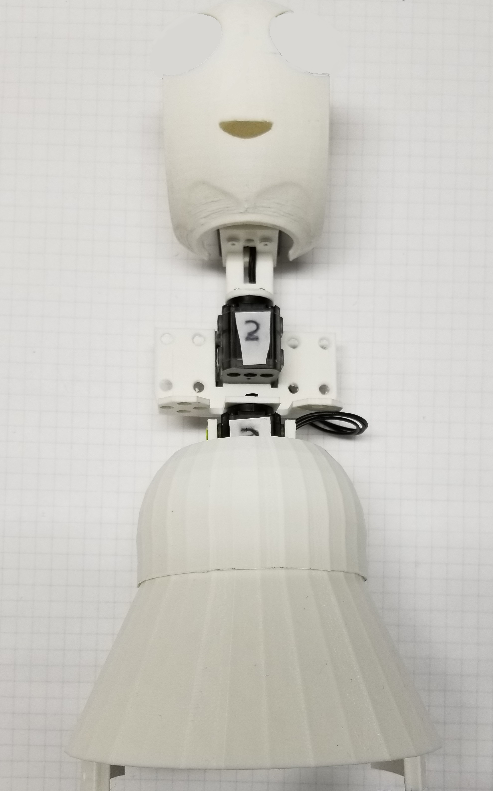

Microsoft Applied Robotics Research Library
Microsoft Applied Robotics Research Library
Open Source Samples for Service Robotics

gestureBot Construction Guide
Session 4: Assemble the Head Structure
In this session we will 3D-print the components for both arms while assembling the structural components of the gestureBot's head.
Parts:
- servo labeled ID:001 programmed in Session 2
- 130MM servo cable
- (22) short plastic rivets
- (5) long plastic rivets
- (8) 3mm miniature steel screws
- Neck 3D-printed in Session 3, the neck is connected to servo ID:002 that rotates horizontally allowing the gestureBot to turn its head and servo ID:001.
- Head Swing Bracket 3D-printed in Session 3, the head swing bracket and servo wheel are attached to servo ID:001 that rotates vertically allowing the gestureBot to look up and down.
- Servo Wheel 3D-printed in Session 3, the servo wheel supports servo ID:001 in the head swing bracket.
- Head Frame 3D-printed in Session 3, the head frame attaches to the head swing bracket and provides a mount point for the speaker and face components.
- Face 3D-printed in Session 3, the face connects to the head frame and provides a mount point for the speaker and the eyes.
- Speaker 3D-printed in Session 3, the speaker is a mounting component intended as a placeholder for a speakspeaker modification in the future.
Tools:
- PH0 Phillips screwdriver
- plastic rivet tool

Procedure:
First, start 3D-printing the parts required for both arm assemblies:
Second, assemble the head structure:
-
Mount the neck to the horn () of servo ID:002, taking care to align the tick-marks of the servo cover, the horn, and the neck component.
-
Route the 130mm cable from servo ID:002 through the holes in the neck.
-
Connect the 130mm cable to servo ID:001.

-
Mount servo ID:001 to neck with (4) rivets.
-
Mount the speaker component and head frame to face with (4) M1 10mm machine screws.
-
Attach servo wheel to head swing bracket with long rivet. Do not install the rivet pin to allow the servo wheel to rotate freely.

-
Install servo ID:001 to head swing bracket taking care to align servo horn tick-mark with tick-mark on bracket.
-
Mount face frame to head swing bracket with (4) long rivets. Installing the rivet pins is not recommended to accomodate future modifications and disassembly.
-
Inspect the gestureBot torso and head structure assemblies. 